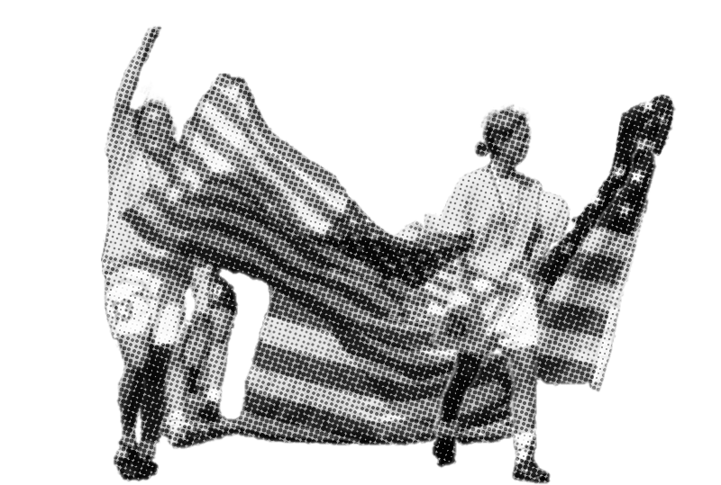
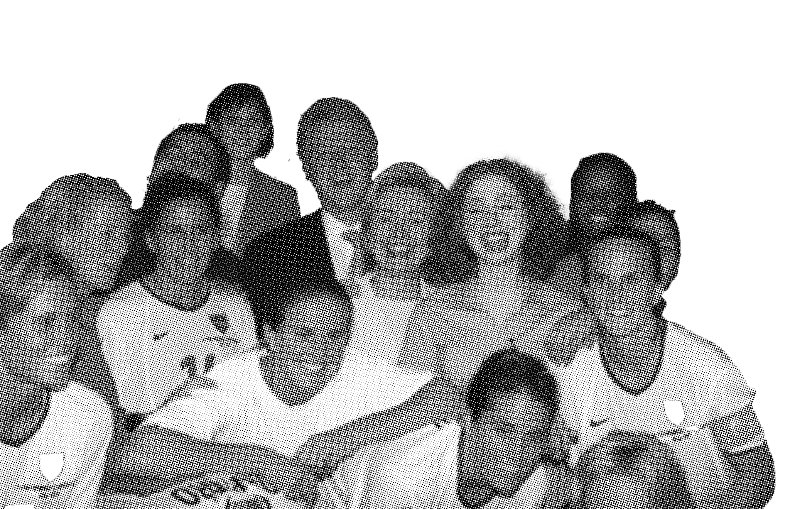

1999: THE U.S. WOMEN'S NATIONAL SOCCER TEAM
By Lacey Shin
Updated on November 17, 2025
1999
The final Women’s World Cup of the century launched the beginning a new era of success for women’s soccer. For the first time, the tournament was expanded to 16 teams and was staged in huge stadiums across the host country, raising expectations for attendance, media coverage and television audiences; expectations which were reached, surpassed and then crushed.

HISTORICAL BACKGROUND
The final Women’s World Cup of the century launched the beginning a new era of success for women’s soccer. For the first time, the tournament was expanded to 16 teams and was staged in huge stadiums across the host country, raising expectations for attendance, media coverage and television audiences; expectations which were reached, surpassed and then crushed.

TOUNRAMENT RESULTS
The final Women’s World Cup of the century launched the beginning a new era of success for women’s soccer. For the first time, the tournament was expanded to 16 teams and was staged in huge stadiums across the host country, raising expectations for attendance, media coverage and television audiences; expectations which were reached, surpassed and then crushed.
The U.S. captured its second Women’s World Cup Championship while thrilling a nation and becoming the story of the year. The team played in front of packed houses across the country, beginning with a crowd of 78,000-plus at Giants Stadium cheering the team to a 3-0 tournament opening victory over Denmark. The victory set a tone for the entire tournament. After fighting their way into the final with five victories, which included a come-from-behind 3-2 victory over Germany in the quarterfinals and a nail-biting 2-0 victory over Brazil in the semifinals, the U.S. battled China for a grueling 120 minutes before pulling out a breathtaking 5-4 penalty kick victory in the finals in front of a sell-out crowd of 90,125 fans at the Rose Bowl in Pasadena on July 10.
After a scoreless 90 minutes of regulation, China appeared to get the winner in the first 15-minutes of sudden-death overtime, but midfielder Kristine Lilly jumped high to head a shot clear of the goal. That save would lead to goalkeeper Briana Scurry and defender Brandi Chastain becoming heroes during the penalty kick tiebreaker. Scurry leaped off her line to save China’s third shot, allowing Chastain to slam home the game-winning penalty kick goal. With the championship, the U.S. became the first nation to win the Women’s World Cup on its home soil.

IMPACT
The 1999 FIFA Women’s World Cup marked a turning point in American sports history, transforming women’s soccer from a niche interest into a national phenomenon. Led by stars like Brandi Chastain, Kristine Lilly, and Carla Overbeck, the “’99ers” captivated over 90,000 fans at the Rose Bowl and millions more watching at home as they defeated China in a dramatic penalty shootout. Their determination, teamwork, and unforgettable moments—like Chastain’s iconic celebration—proved that women’s soccer could capture the same excitement and emotional power as any men’s event. Behind the scenes, bold decisions by organizers, such as moving games to large stadiums and marketing directly to families and young girls, defied skeptics and created unprecedented visibility for women’s sports in the U.S.
The ripple effects of that victory shaped the trajectory of women’s soccer for decades. It led to the launch of the first professional women’s soccer leagues and ultimately paved the way for today’s thriving National Women’s Soccer League (NWSL), where teams are now valued in the hundreds of millions. The ’99ers’ legacy also inspired a generation of athletes like Megan Rapinoe and Alex Morgan, who carried forward their fight for equality and visibility. Today, leaders like Chastain, Lilly, and Overbeck continue to advocate for women’s sports, reminding young players that they belong on the field—and that their opportunities exist because of those who came before them. The 1999 World Cup was not just a win on the scoreboard; it was the moment that redefined what women’s sports could mean in America.

ROSTER
Cindy Parlow Midfielder
Michelle Akers Midfielder
Brandi Chastain Defender
Joy Fawcett Defender
Julie Foudy Midfielder
Kate Sobrero Markgraf Defender
Mia Hamm Forward
Saskia Webber Goalkeeper
Kristine Lilly Forward
Lorrie Fair Allen Defender
Christie Pearce Rampone Defender
Tish Venturini Hoch Midfielder
Tiffany Roberts Sahaydak Midfielder
Briana Scurry Goalkeeper
Shannon MacMillan Forward
Danielle Fotopoulos Forward
Tracy Noonan Goalkeeper
Sara Whalen Hess Defender